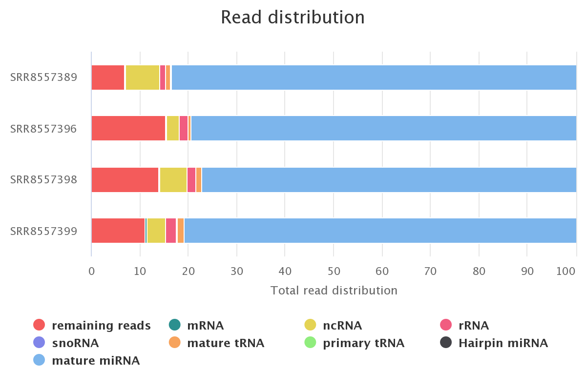

miRge3.0 output¶
Command and sample run with UMI datasets¶
miRge3.0 -s SRR8557389.fastq,SRR8557396.fastq,SRR8557398.fastq,SRR8557399.fastq -lib miRge3_Lib -on human -db miRGeneDB \
-o temp -a AACTGTAGGCACCATCAAT -udd --qiagenumi -umi 0,12 -cpu 12 -q 20 -NX -nmir -minl 16 -maxl 25 -c 2 \
-mloc 3 -sl 25 -olc 14 -clc 30 -gff
bowtie version: 1.2.3
cutadapt version: 2.7
Samtools version: 1.7
RNAfold version: 2.4.14
Collecting and validating input files...
miRge3.0 will process 4 out of 4 input file(s).
Cutadapt finished for file SRR8557389 in 21.0854 second(s)
Collapsing finished for file SRR8557389 in 0.0699 second(s)
Cutadapt finished for file SRR8557396 in 10.305 second(s)
Collapsing finished for file SRR8557396 in 0.6016 second(s)
Cutadapt finished for file SRR8557398 in 10.891 second(s)
Collapsing finished for file SRR8557398 in 0.911 second(s)
Cutadapt finished for file SRR8557399 in 14.2126 second(s)
Collapsing finished for file SRR8557399 in 1.1292 second(s)
Matrix creation finished in 0.4788 second(s)
Data pre-processing completed in 62.762 second(s)
Alignment in progress ...
Alignment completed in 16.9863 second(s)
Summarizing and tabulating results...
Summary completed in 7.8131 second(s)
Predicting novel miRNAs
Performing prediction of novel miRNAs...Start to predictPrediction of novel miRNAs Completed (220.35 sec)
The analysis completed in 310.7281 second(s)
Output tree structure¶
An output directory is created for each run such as miRge.2020-10-9_1-35-53, where the name is followed by date time format miRge.yy-dd-mm-hr-mm-ss.
The following output is in general, however, the resultant output files are based on the options selected during miRge3.0 execution.
miRge.2020-10-9_1-35-53
├── run.log (Gives the detailed log of miRge3.0 execution)
├── unmapped.log (Gives the detailed log of novel miRNA prediction)
├── mapped.csv (CSV file with read counts across each smallRNA library)
├── unmapped.csv (CSV file with unaligned/mapped reads)
├── annotation.report.csv (Basic annotation report with small RNA distribution in CSV format)
├── annotation.report.html (Basic annotation report with small RNA distribution in HTML format)
├── sample_miRge3.gff (GFF file with reads with isomiRs across one or more samples, if -gff option selected)
├── miR.Counts.csv (miRNA raw read counts across samples)
├── miR.RPM.csv (miRNA Read Per Million - RPM counts across samples)
├── *_umiCounts.csv (Counts for each unique UMI for each sample)
├── index_data.js (Javascript file with data generated for visualization)
├── miRge3_visualization.html (HTML for data visualization)
├── FOLDER_novel_miRNAs
│ ├── *.pdf (novel miRNA structure in PDF format for each miRNA)
│ └── sample_novel_miRNAs_report.csv (Contains list of identified novel miRNAs in CSV format)
├── a2IEditing.detail.txt
├── a2IEditing.report.csv
├── a2IEditing.report.newform.csv
├── tRFs.potential.report.tsv
├── tRF.Counts.csv
├── tRF.RP100K.csv
├── tRFs.potential.report.tsv
├── discarded.reads.summary.assigningtRFs.csv
└── tRFs.samples.tmp
└── *.tRFs.* (Detailed summary of tRFs from each sample)
miRge - interactive visualization¶
miRge3.0 produces several interactive visualization graphics as follows
Screenshot of the miRge visualization HTML tab

Chart view and download options

Screenshot of the smallRNA read distribution for each sample 
Screenshot of the read length distribution for each sample

Screenshot of the tile map representing top 40 high abundant miRNAs for each study

Screenshot of the variant distribution for all samples combined (isomiRs)

Screenshot of the heatmap representing variants for each sample for the top 20 high abundant miRNAs (isomiRs)

Screenshot of the histogram representing UMI counts across each sample

Screenshot of a list of novel miRNAs identified across samples

Resources:¶
The graphics for miRge3.0 visualization is enabled with javascripts and CSS obtained from the following: